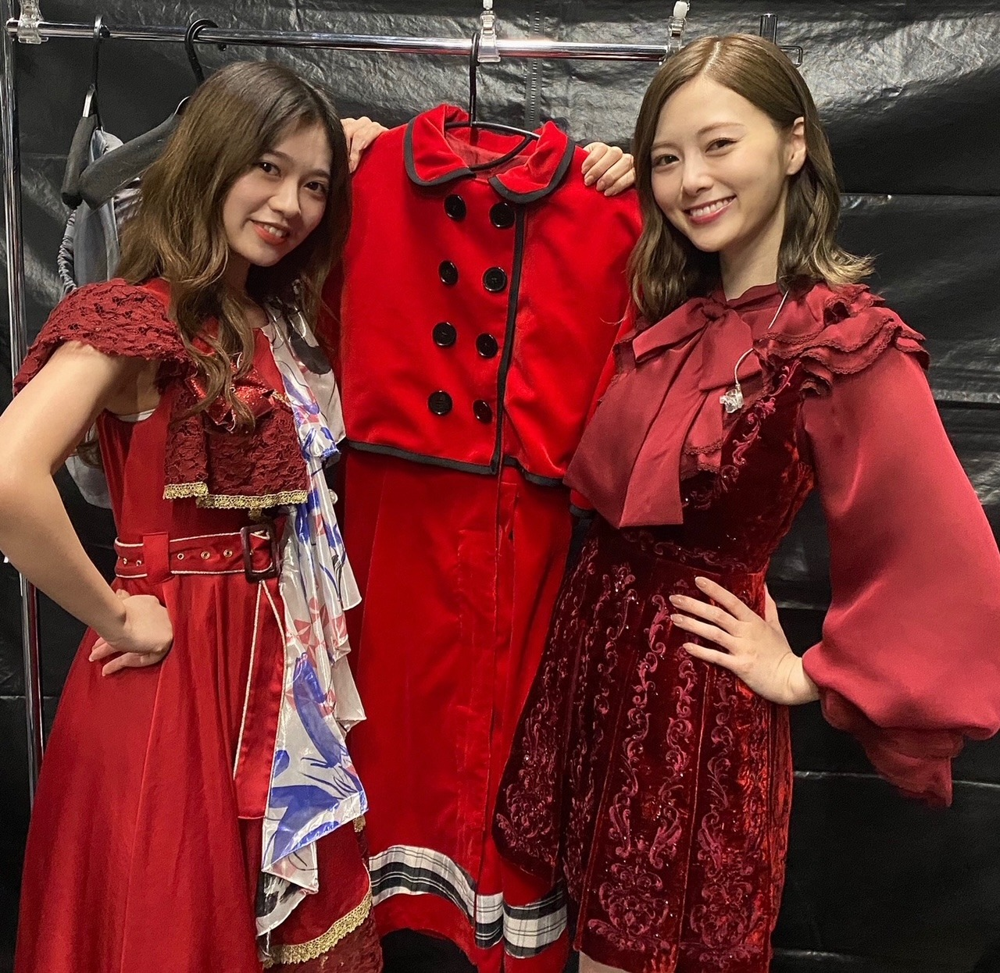
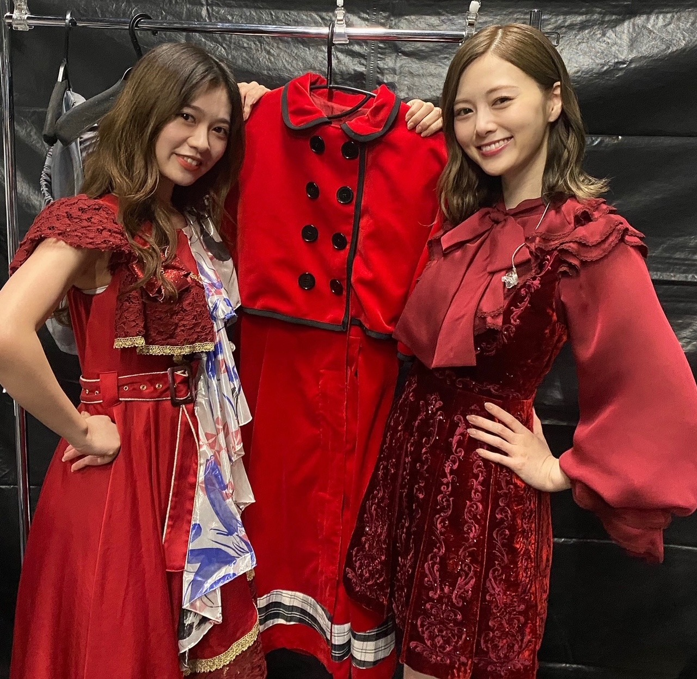
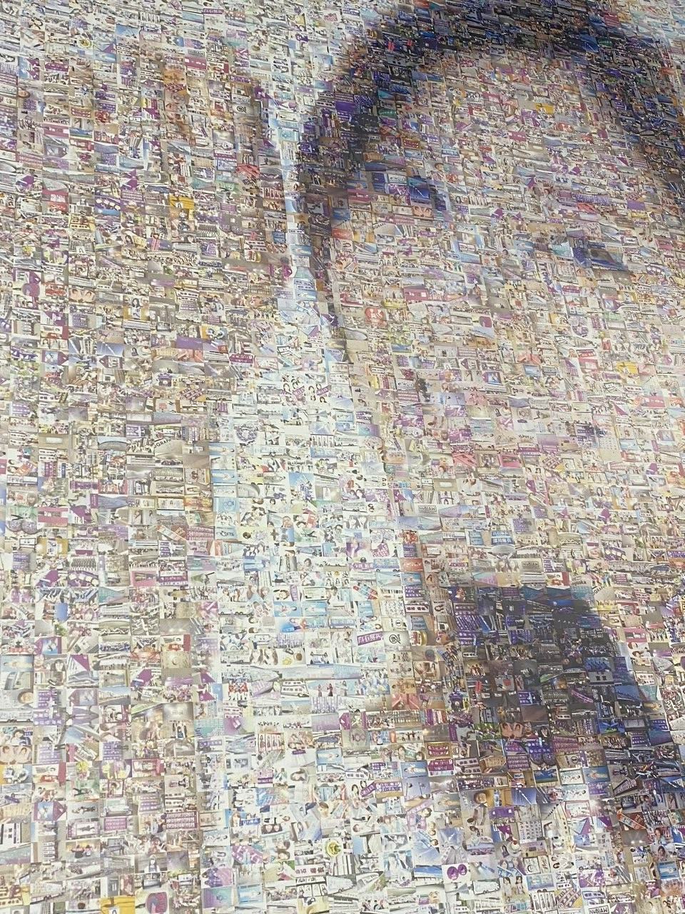
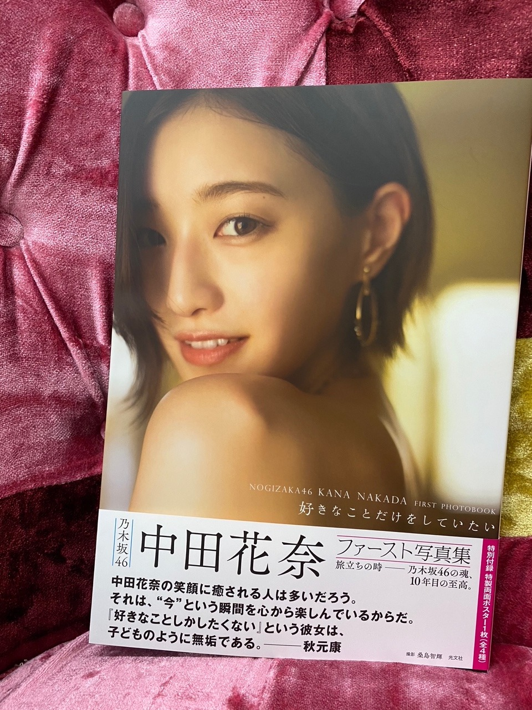
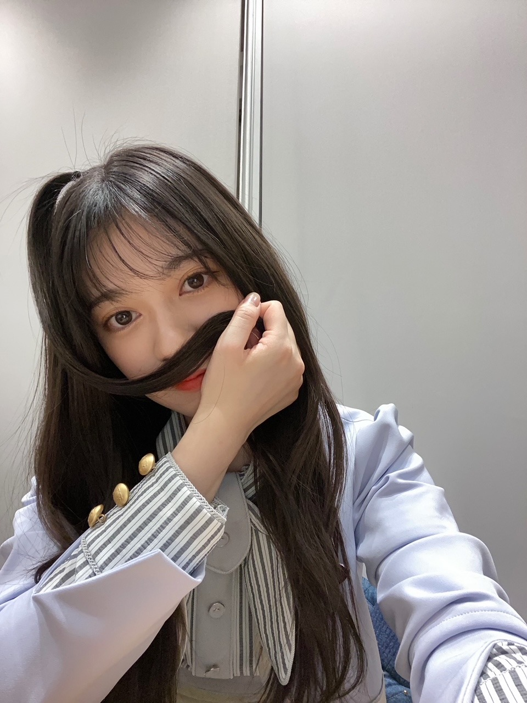
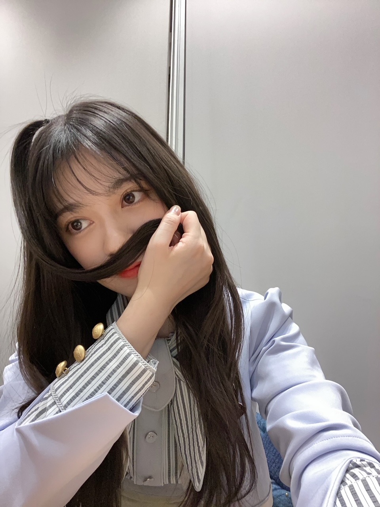
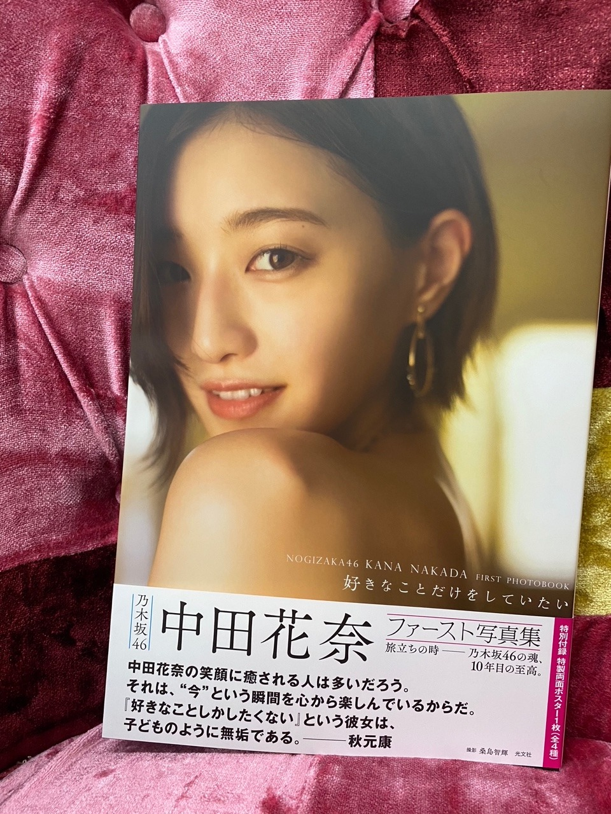
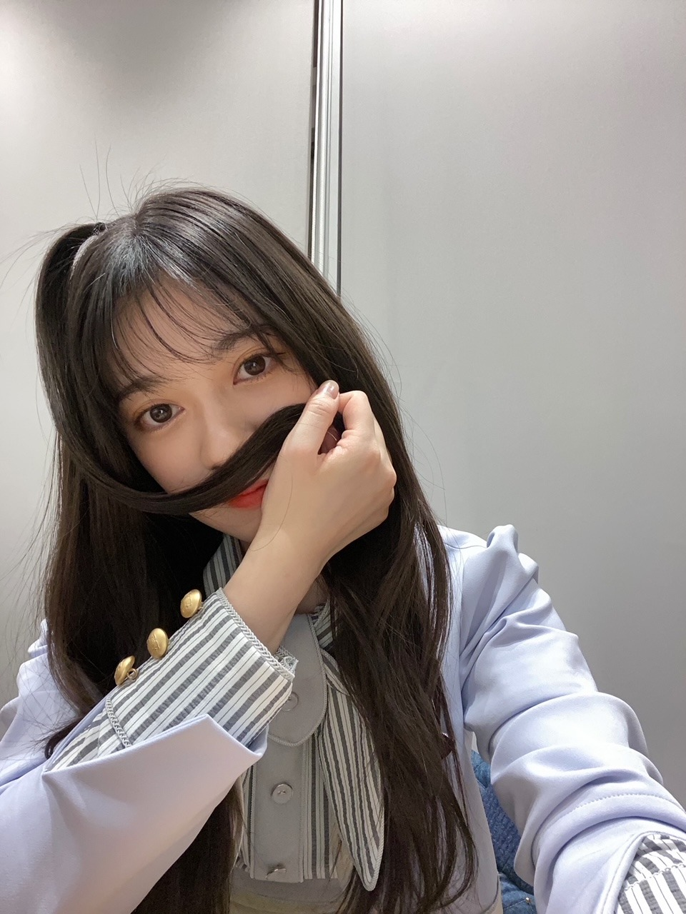
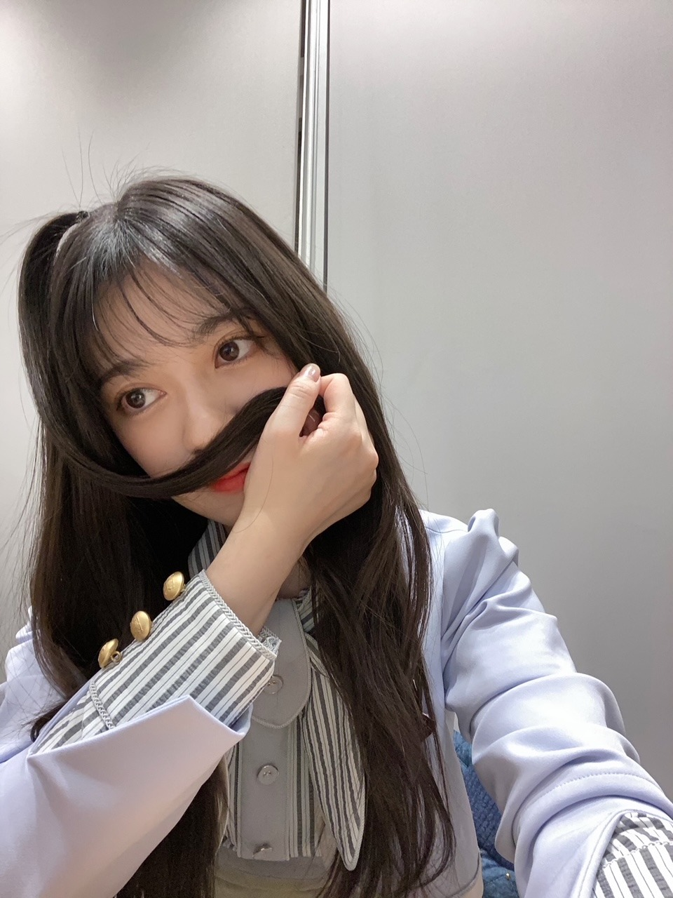

2020/1111Wed林檎と白米
今、話したい誰かがいるを
歌うと心がぐっと締め付けられます。
当時私は昇格して間もなく
幼いながらに自分の正しいと思う道にひたすらに
走ってみる日々でした。
グループとしての成長
寺田蘭世個人としての成長
色々刺激の多い時期でした。
ファンの人も手探りで
そして、とても熱い思いを感じていました。
あのメンバーでみた景色
アンダーライブでみた初めて一列目に立った景色
先輩達からの熱くてあたたかい指導
色々なプレッシャー
ファンの人の声援
色んな初めて得る感情が本当に沢山ありました。
ひなことシンメで披露した今、話したい誰かがいる
個人的に凄く思い出に残っていて
沢山シンメや同じユニットもあるけど
何故かこれが印象的に頭に残っています。
ここ最近歌番組で
この曲を披露出来た時に
当時を思う事がありました。
やっぱり、素敵な曲です。✨
最後に白石さんと踊れて歌えて良かったと
心から思います。
白石さんのセンター曲はユニットも含めて
好きな曲が多いです。
優しかったり強かったり
歌詞は寄り添ってくれるような
そんな、乃木坂らしい曲が沢山ありますね。✨
カナさんとバイバイしたばかりで
なかなかこの短い時間で
白石さんとのバイバイは胸がざわざわしますし
頭と身体が追い付かないような不思議な気持ちになっています。
でも、卒業は次へのスタート
何回経験しても勿論色々思う事がそれぞれにあって
でも、次みんなに会うのがとても楽しみですし
またみんなで集まった時に沢山思い出話したいですし
今はこんなことしてるんだよーって
いつか語り合える日がくるのかと思うと
それも楽しみです。✨
2人とも大好きな人です。
出逢えただけでも私にとっては宝物のような
瞬間でした。
2人の後輩になれてよかったです。
皆んなが一期生で私が二期生で会えて良かったですし
みんなで過ごした時間は本当に宝物です。
大切に些細な事も忘れないように
抱きしめて生きていきたいです。
また、会いたいです。☺️✨
密にならないように
あの曲の衣装を挟みながら
なんかイケイケポーズで可愛いよー。✨

歌うと心がぐっと締め付けられます。
当時私は昇格して間もなく
幼いながらに自分の正しいと思う道にひたすらに
走ってみる日々でした。
グループとしての成長
寺田蘭世個人としての成長
色々刺激の多い時期でした。
ファンの人も手探りで
そして、とても熱い思いを感じていました。
あのメンバーでみた景色
アンダーライブでみた初めて一列目に立った景色
先輩達からの熱くてあたたかい指導
色々なプレッシャー
ファンの人の声援
色んな初めて得る感情が本当に沢山ありました。
ひなことシンメで披露した今、話したい誰かがいる
個人的に凄く思い出に残っていて
沢山シンメや同じユニットもあるけど
何故かこれが印象的に頭に残っています。
ここ最近歌番組で
この曲を披露出来た時に
当時を思う事がありました。
やっぱり、素敵な曲です。✨
最後に白石さんと踊れて歌えて良かったと
心から思います。
白石さんのセンター曲はユニットも含めて
好きな曲が多いです。
優しかったり強かったり
歌詞は寄り添ってくれるような
そんな、乃木坂らしい曲が沢山ありますね。✨
カナさんとバイバイしたばかりで
なかなかこの短い時間で
白石さんとのバイバイは胸がざわざわしますし
頭と身体が追い付かないような不思議な気持ちになっています。
でも、卒業は次へのスタート
何回経験しても勿論色々思う事がそれぞれにあって
でも、次みんなに会うのがとても楽しみですし
またみんなで集まった時に沢山思い出話したいですし
今はこんなことしてるんだよーって
いつか語り合える日がくるのかと思うと
それも楽しみです。✨
2人とも大好きな人です。
出逢えただけでも私にとっては宝物のような
瞬間でした。
2人の後輩になれてよかったです。
皆んなが一期生で私が二期生で会えて良かったですし
みんなで過ごした時間は本当に宝物です。
大切に些細な事も忘れないように
抱きしめて生きていきたいです。
また、会いたいです。☺️✨
密にならないように
あの曲の衣装を挟みながら
なんかイケイケポーズで可愛いよー。✨



ぺろぺろ、、、
絢音ちゃんの写真集も見させていただきました。✨
素敵でしたよー。✨
ar宜しくお願い致します。
実はみおなの連載ページに呼んで頂きました。！
arさんはすごくキラキラが凝縮された雑誌で
よく読む雑誌の１つなので
とてもうれしかったです。！
撮影もとても楽しかったので
その空気感紙面でも伝わると思います。！
お洋服、ファッションが好きだから
とにかく楽しかったです。☺️✨
是非、チェックしてみてください。！
arさんありがとうございました。！
他にもお知らせが
また、後日書きます。☺️

髪型沢山アレンジ出来そうなデザインや色味の新制服。
新制服も宜しくお願い致します。✨

ぺろぺろ、、、
絢音ちゃんの写真集も見させていただきました。✨
素敵でしたよー。✨
ar宜しくお願い致します。
実はみおなの連載ページに呼んで頂きました。！
arさんはすごくキラキラが凝縮された雑誌で
よく読む雑誌の１つなので
とてもうれしかったです。！
撮影もとても楽しかったので
その空気感紙面でも伝わると思います。！
お洋服、ファッションが好きだから
とにかく楽しかったです。☺️✨
是非、チェックしてみてください。！
arさんありがとうございました。！
他にもお知らせが
また、後日書きます。☺️

髪型沢山アレンジ出来そうなデザインや色味の新制服。
新制服も宜しくお願い致します。✨
2020/11/11 19:54


コメント(376)
蘭世！ブログ更新ありがとう！！！
そして、あいらはしあわせの保護色のミーグリ全部終わりました！ありがとう！！！できるだけ長く話したくてまとめ出しをしたからあんまりいつもみたいに回数は話せなかったけど、すごい幸せだったし安心したよ！
大好きだーってなった！w
次いつ話せるか不安だけど手紙も出すしブログも毎回コメントします！♡
今年は会えないかもしれないけど、変わらず大好きです！なんならむしろもっと蘭世を知って好きになってます！
いつもたくさんありがとう！
まだまだ体には気をつけてください！！！
手紙を出しました！時間があったら読んでください！封筒にスヌーピー描いたよ〜(^^)
いつもしあわせをありがとう！
だいすいです！
あいら。より！
新制服似合いすぎて可愛すぎる！大好き！！
早く会いたいよー！！！
今、話したい誰かがいる、私もすごく好きな曲です。
ar是非買いたいとおもいます！！
これからもお身体に気をつけて頑張ってください！！
今週大事なサッカーの試合があるので最高のタイミングでの更新です。笑
受験も頑張ります。
全部落ち着いたら報告しにミーグリしに行きます。
これからはみんなで支えていこう
白米様のみんなで支えていこう
お知らせ楽しみに待ってる!!!!
今誰への想いとても素敵ですね。
僕はそれより少し後からファンになりましたが
今誰のときも番組などは見ていました＾＾
今回の新制服は特に蘭世ちゃんの今の髪色にも似合っていてとても素敵です(*´▽｀*)
またお知らせ待ってます～
大好きな人と過ごした時間、忘れずにいっぱいいっぱい抱きしめないとね〜！
これからも彼女たちの良さを引き継いで
蘭世さんらしく、乃木坂に貢献していってくださいね〜！！
僕もいっぱい応援するので！
ar楽しみだなー！
最近はインスタも積極的に活用してくれていて
日々わくわくがいっぱいですよ〜！
ありがとう
メールもありがとうね！
流行病にかかりやすい時期ですので
体調には十分お気をつけください
暖かくしてね〜！
まいやんとの2ショットもありがとね‼︎
卒業ライブ感動した‼︎
まいやんの卒業は悲しいけど、これからも頑張って ‼︎‼︎
今誰はちょうど乃木坂を知った楽曲なので個人的にものすごく思い入れがあるし何よりも乃木坂らしさ溢れる表題曲だなと思ってます
そんな楽曲がパフォーマンスされる時に蘭世が居てまた新たな感情がうまれました
素敵なパフォーマンスをありがとうございました
偉大な1期生のまいやんとかなりんの卒業はグループとしても1つの大きな出来事ですがまた会える日を楽しみにですね
本格的に冬になっていくので乾燥や気温調整等お身体に気をつけてお過ごしください
Instagramやらモバメもいつもありがとうございます
ではまた
今誰、最近TVで披露してるのを観ることが多かったけど、当時のメンバーから大きく代わって3期4期生が入ってるのをみて、時の流れを感じました。きっと当時から長い月日が経って蘭世たちもまた当時とは違う気持ちで披露したのかなーって想像しながら観てました。乃木坂らしくて本当に良い曲です。
蘭世は花奈さんとまいやんとのエピソードを語ってくれることが度々あったよね。本当に良い先輩なんだなってすごく感じてました。また会ったときはブログやモバメで教えてね！
応援してます！ar楽しみです！
サヨナラは通過点で
スタートで、別れで、
サヨナラのタイミングが最も美しくて、
少し胸が痛いですが2人の新たな門出を祝福したいと思います！
ライブありがとうございました。
メンバー皆が生き生きしているのはやっぱりライブ中だなと改めて思いました。
生で見ることはまだ難しいですが
またみんなの生き生きした姿が見たいです！
その日を心待ちにしています。
ユースケ
お知らせ楽しみに待ってます！
まだ蘭世は、卒業しないでね！
これからも応援してます！最近寒くなって来たので体調に気を付けて頑張ってね！蘭世にも写真集出してほしいです！
大好き！
ブログ更新ありがとう
今、話したい誰かがいるは自分が乃木坂を好きになったきっかけの曲でもあるからすごい大好きな曲なんだよね！
曲調も好きだしMVもすごく良くてほんとに大好きな曲！！
卒業は悲しいことだけど卒業するメンバーのことも応援していかないとね！
今回はこの辺で
またコメント書くね
らんぜの勢いとまらんぜ〜
これからも続く、素敵な関係！
良い知らせも聞けて嬉しいよー！
寺田さんの気持ちがいっぱい詰まった
とても濃いブログです、、、、
なんだろ、ここでコメントするには
あまりに時間が足りなさ過ぎて
きっと寺田さんも時間をかけてブログを書いただろうから
私も時間をかけたいけど、
止まらなくなりそうだから簡潔にいきます！
卒業はネガティブなものではなく
次へのステップだとポジティブに考えれる気持ち
寂しい気持ちはきっとあるとは思いますが
その気持ちが大切ですね
今誰、いい曲ですよね
Mステで寺田さんがあの曲を披露することに
きっと色んな思いがあるだろうなぁと
生放送を見てて思って
その気持ちが聞けて私は嬉しいです
ar拝見させて頂きました〜！！！
「しゃれらんぜ」なんて単語がありましたが
インスタのハッシュタグとかにぜひどうですか！？
寺田さん自身のファッションの事発信するのにも
とてもいいなと思いました、私は使っていきたい✊
ヴィンテージンティ、寺田さんにぴったりだなと思って
私もヴィンテージ好きだし、古着とか
この特集見れて嬉しかったし
ファッション関係のお仕事に
寺田さんが出てるのを見るとほんと幸せ
この先のお知らせを楽しみにお仕事がんばりまっす！
猫舌お疲れ様でした〜〜こんなにもすぐ新制服見れて嬉しかった^^
そして最後の締めとして「推しの日」について書いたコメント選んでもらえて幸せでした
ありがとう、推しの日は過ぎちゃったけど
本当にいつもありがとう
握手券がないので、ミーグリには今参加できないのですが
寺田さんとお話したい気持ちはずっとあります
私の事覚えててくれると嬉しいです…
なんてわがまま言わせてください〜〜
ココ最近は寺田さんに幸せを分けてもらってばかりだから
私も寺田さんに幸せを与えられるような人になりたいです
ではまた！！！(結局長くなりました〜(笑))
すきやーーーーー
ゆうき（ゆっちゃん）
新制服すごくいいですね
私が知っている乃木坂、蘭世ちゃんって歴史の中のほんの一部ですが、
それでも胸にグッとくるものはあります。
出会いって素敵ですね。
これからも色んな景色を一緒に見ていきたいです☺️
いつも支えてもらっている分、少しでも蘭世ちゃんの支えになれるようなファンでありたいです。
まいやんの参加曲、私も好きなの多いー☺️
まいやんとの2ショットもありがとう。
キラキラしてます！とても！！！
あの時間はすっごく尊いものでした。
arの世界観、好きでした。
お洒落な蘭世ちゃんが見れて、
未央奈ちゃんとの空気感も良かったです☺️
これからも、ファッション誌で蘭世ちゃんを見れたらなあって思います☺️
新制服、めっちゃ可愛いね♡
お写真は猫舌の時のかな？
ar明日買いに行きます、楽しみです
個人的にファッション誌に推しメンがでてるのめちゃくちゃ嬉しいです、ミーグリで雑誌一緒に見ながらお話したかったなあ…またの機会に……
インスタもちゃんとチェックしてます。次お話できるのいつかわからないけど、インスタについてもゆっくりお話したいなあ。
陰ながらずっと応援してます！体調にはお気をつけて…またコメントしますね〜
新制服もすごい似合ってて可愛いよ！
またブログ更新されるの楽しみに待ってるね！
体調には気をつけてね
まいやんの卒ラのガルルに蘭世ちゃんがいたのが個人的に
とっても嬉しかったよ(T_T)
最後の写真、絢音ちゃんとオソロの髪型だったよね！
めちゃくちゃ可愛い( • •)❤︎
かなりん、まいやんと卒業が続いて寂しいと思うけど
蘭世ちゃんの良さがたくさんの人に伝わるようにインスタとか
ブログとか布教するからね！応援してます！
自分は乃木坂の歴史からしたら最近ファンになった方なので、手探りの期間がまだ短いようにも感じますが、この短い期間でも蘭世さんの成長を見れて凄く嬉しいです。
いつかOGが集まったりしたら楽しそうですね！
本当に美しくていい写真です、悲しいですが、応援するしかないですね！
絢音さんの写真集買いました！2期生の活躍は嬉しいですし、さらに今回の写真集はいつもと違った感じがしてとても良かったです！
実は蘭世さんが写真集読んだ動画が公式Twitterに上がるのを待っているのですが、ありますかね？
arさん！チェックしときます！
お知らせ？楽しみですー！
新制服いいですよね！猫舌のときが初披露かな？とても良きでした！また楽しみにしてますー！
今回の1曲！
ナナヲアカリさんで｢クライソング｣！
先日発売されたシングルの収録曲なのですが、Cryと聞いて悲しい曲かと思ったらそうではなく、泣きたくなっても一緒に手を繋いで支え合うという強い曲になってるのでぜひ！
インスタもう少しでフォロワー18万人行きそうですね！順調で自分も嬉しいですー！
また投稿楽しみにしてます！
！！！(･_･、)いつも楽しみにしてる！ これからも楽しみにしてます！質問返しまたして欲しいなぁ！
確かにまいやんが歌っている曲は心に染みたり、刺さったりと、ホントにいい曲が多いんですよね…
バイバイが近いと心の整理だとかが追いついてなかったりするやもだから、ファンよりもっとメンバーの皆さんは辛いんでしょうね。
僕には経験できない辛さだ、、
本当にいい写真です！目がうるっときました。。
インスタ効果がこれからもどんどんと来ると思いますよ！！
これからも乃木坂のファッションリーダーとして頑張ってください！！
自分は男なんですけど、真似できる服は自分が似合うかどうか見極めつつ模倣させて頂きます！
最後の写真は先週の絢音さんと配信したSHOWROOMの時ですね！
*☼*―――――*☼*―――――*☼*
インスタのフォロワーもうすぐで18万人ですね！！
さっきに言っておきます。 18万人おめでとうございます！！
毎日お仕事でお疲れの中、モバメやInstagramなど更新して下さり、今日みたいにブログを更新するために内容を考えたりと、色々ありがとうございます。
蘭世先生のやってくださっている事が僕の励みであり、原動力です！
いつもありがとうございます。
*☼*―――――*☼*―――――*☼*
蘭世先生の妹が蓮加ちゃんと歳が近いことを知れて、自分とも近いということなのでなぜかは分かりませんが、嬉しいです！笑
広島住みの璃音
蘭世こんばんは！
お元気そうで何よりよ
まいやん、かなりんと乃木坂を長く支えていってくれた先輩が卒業するのはやはり寂しいものだけど、2人の今後の未来がより輝いてくれることを心から祈ってるよ♪
そして蘭世も 自分らしさを忘れずに色んなことを乗り越えていってくれたら幸いだよ(*´ー`*)
新制服良き良きよね♪ とても好きだなあ(*ﾉｪﾉ)
今、話したい誰かがいるは俺にとっても特別というか、思い入れのある楽曲なんだ
実は俺が乃木坂46を好きになるきっかけになった曲なんだ！
初めて聴いて、初めて好きになった曲なんだ
人との繋がりとか、俺らには無くてはならないものを歌ってるから、自然と心に響くんだよね
なんか蘭世さんのブログ読んだら聞きたくなっちゃった笑
かなりんとまいやんという、蘭世さんにとっては憧れで大先輩
そんな人達が乃木坂を去ってしまったの本当に寂しいね
でも、「卒業は次へのスタート」って言葉にグッと来ました
卒業は確かに寂しいもの
だけど自分が、乃木坂が次に進むためには必要なことでもあるんだよね
そう思い直せました！
新制服ホントに可愛いよね！
これからの乃木中や、外での番組出演楽しみにしています！
新衣装可愛い！！
握手はやくできるといいね！
オンラインのやつもいくからまっててね！！
まってぃん(りょうた)より
変わらないものもある中で
めまぐるしく変わるグループの形
でもそのどんな変化にも立ち向かう
そんな姿勢を見せてくれた白石さん
憧れや思い出に閉じ込めていては
絶対にもったいない！！
越えてやろうぜ！(^^)
それもある意味、感謝であり
得たものへの恩返しかもしれないよ(^^)
最近の活き活きした蘭世なら大丈夫！
えいえいおー！
ar！ついにファッション案件が(*^^*)
蘭世が今頑張ってることがこうして
目に見えて成果となることが嬉しいっす‼︎
この先も素敵な良縁に恵まれますように☆
新制服似合っててかわいい！！
雑誌もチェックしますねー！
以前は卒業は悲しくて落ち込んで立ち直るのに時間かかってたし考えられる暇もなかったけど最近は人は必要なときに必要な人と出会うっていうのが深く考えられるようになって前向けるように努力できるようになった。今できることをとことん楽しまないとだよね！
まだ買えてないけどanan、ar読むね！
新制服落ち着いてていいよね、かわいい！色んなアレンジしてる蘭世楽しみにしてるね！いつもありがとう！
いい写真が沢山だね、色んなことが次々に起こってなかなか気持ちが追いつかないこともあるかもしれないけど、これからもずっと応援してます。
日曜のミーグリありがとう！
モバメもいつもありがとうございます！体調には気をつけてください！
猫舌みたよー！
絢音ちゃんと蘭世のコンビはとても良いですね！
楽しい時間を過ごせましたー！
本格的に寒くなってきたから体調に気をつけて頑張ってね
先日の白石さん卒業コンサートはまいやんを次のステージへメンバー皆さんが送り出そう！という気持ちがとても伝わってきました。本当に素敵でした。久々のライブ楽しかったー！
また新しいお仕事で卒業されたみんなとお仕事が出来る日が楽しみだね。私もその活躍がみられる日をとっても楽しみにしています
arさん、通販で買わせていただきましたー
読んだら感想を書き込みするね！
新制服、淡めの青みが素敵なお色だね。蘭世ちゃん似合ってます！
蘭世ちゃん大好きです。またね:-)
今、話したい誰かがいる
とてもいい曲ですよね
僕はまだその時、乃木坂のことを知りませんでしたし
その時の蘭世さんがどんな感じだったかも分かりません
でも先輩たちが大切にしてきた、まいやんが好きだと言っていた楽曲のラストの披露の時に、同じステージに立っていた蘭世さんがとても素敵に映ってました
蘭世さんも、これからこの楽曲、先輩の思いを引き継いで
大切にして欲しいです
そしてこれからも蘭世さんらしく
何卒よろしくお願いいたします
最近は寒くなってきて、風邪やコロナ、これからインフルエンザも流行ってきますので、体調管理しっかりして
お互いに頑張りましょう！
大好きです。
ユウキ
そうだよね。
13枚目シングルは2期生にとっていろいろあった期間だもんね。
ーーーー
まいやんもかなりんもすごくすごく2期生にとってすごく大事な存在だよね。
だから2期生が後輩に先輩の魂を受け継いでいこうっ。
やぁ
ブログ更新ありがとう！
俺もその歌聴くと凄くグッとくるものがある。
蘭世
蘭世
その頃はまだまだ蘭世
一番成長したり挫折を経験したり悩んだりする時期だったのかもな。
アンダラとか今のぎ動画で配信してくれてるからそういう思いも知ってみたらまた観る感じが変わってくるな。
白石さんとのステージを一緒に出来てホンマ良かったよな。
最後までちゃんと背中を見て一緒に過ごせただろうし
ホンマええ時を過ごしたね。
せやな～卒業が近かったりしたらその人との思い出がよみがえってくるだろうしなかなかな難しいよな想いや考えを追いつかすのも。
そうやな。
ずっとグループでってわけにもいかんし次なるステージに進んでまたそこで成長していくこともその人の人生にとっても大事なことだしな。
時間が経ってまたそういう話をするのが楽しみやね。
そこでまたこういう一面があるんだとか発見もするだろうしな
いい先輩に蘭世
出逢いはその時のタイミングで大きく変わるからお二人と出逢えたことはホンマ宝物やわ。
沢山の思い出をしっかりと心に飾ってこれからも過ごしていこうな
ヤバいこのツーショット
でも蘭世
白石さんに負けない位、綺麗な女性に成長してるわ。
ぺろぺろ～って急に笑
絢音ちゃんの写真集も観たんやな。
俺は見てないけど笑
『ar』はホンマええ感じで良かった～
もっともっとファッション関係に雑誌に呼んでもらおうってさっきもそうコメントしたな笑
あ、コレ猫舌の時かな。
可愛すぎな！！！
新制服似合いすぎ
これかも髪型とかも楽しみにしてるで！
きっとまた後で(｡･ω･)ﾉﾞ
まいやんとの写真イイネ\(//∇//)\
arもチェックするねー^o^
写真の髪型すきー\(//∇//)\超かわいいよ！
絢音ちゃんとこないだの猫舌のときのやね( ^ω^ )
今、話したい誰かがいる
自分もこの曲好きです！
心が締め付けられる感じ分かるよ！
今後のブログも楽しみに待ってます！
体調には気をつけてね！
応援してます！
大好きです♡
2人の存在は大きかったね。
でもらんらんの言う通り、
新しいスタートとして頑張ろうね！
まいやんと写ってる写真すっごい蘭世らしくてかっこいい✨
これから更に大きくなっていく乃木坂が楽しみです！がんばれ〜！
これからも応援するよ！
蘭世ちゃんのファンになれて幸せです
早く蘭世ちゃんに会いたいです
2人の卒業はやっぱり寂しいだろうけど、永遠の別れじゃないし、それぞれが遺してくれたものがしっかりと蘭世の中にもあると思うから…それを胸に頑張りましょ！
それに、絶対また会えるし！
またブログ待ってますね☺︎
コメントする